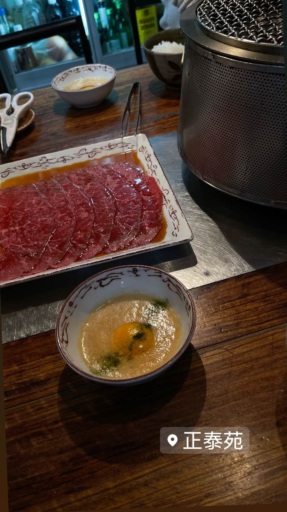

焼肉 青山外苑
料理長が目利きするA5黒毛和牛、握り寿司など生食でも楽しめる
焼肉 青山外苑
南青山のユニマット青山ビルにある大人向けの焼肉店。2021年5月にリニューアルオープンし、料理長が目利きしたA5黒毛和牛を、焼肉はもちろんユッケや握り寿司など生食でも楽しめるのが特徴。
TRIVIA
豆知識
- 無煙ロースターを完備し、煙突のないすっきりした店内
- 加熱調理だけでなく和牛の握り寿司など生食メニューが充実
REVIEWS
世間の評判
3.45食べログ
個室での接待向けA5和牛
- A5ランクの黒毛和牛のとろけるような柔らかさを評価する声が多い
- 個室が完備されていて会食や接待に向いているという声が非常に多い
- 肉の質は可もなく不可もないと感じる人もいるという声も見られる
- 夜の利用は高額でコストパフォーマンスに疑問を持つ声も見られる
食べログ 口コミ317件
| 創業 | 2021年5月1日リニューアルオープン（運営：株式会社ユニマットプレシャス） |
|---|---|
| 看板 | A5ランク黒毛和牛、ユッケ・牛刺し・和牛にぎり寿司などの生食メニュー |
| こだわり | 料理長が産地を限定せず目利きし、その日一番状態の良いA5黒毛和牛を仕入れ。生食用の鮮度管理を徹底し、無煙ロースターを完備。 |
| どこから | 都心 |
| 営業時間 | 月〜日 11:30-15:00、17:30-23:00 |
| 予算 | 昼 ¥1,000～¥1,999 夜 ¥8,000～¥9,999 |
| 場所 | 外苑前 東京都港区南青山2-12-14 ユニマット青山ビル1F |
| メモ | 個室あり（最大18名）、無煙ロースターで店内に煙突がない |
食べたもの：焼肉
NEARBY
近い店・同じ系統の店
-
 ★
焼肉 白金高輪駅
炭焼 金竜山
ロンドン帰りの店主夫妻が焼く上タン塩とシャトーブリアン
夜 ¥20,000～¥29,999
★
焼肉 白金高輪駅
炭焼 金竜山
ロンドン帰りの店主夫妻が焼く上タン塩とシャトーブリアン
夜 ¥20,000～¥29,999
-
 ★
焼肉 関内駅
関内苑 本店
韓国職人仕込みのキムチとA5和牛の手打ち冷麺
昼 ¥1,000～¥1,999
★
焼肉 関内駅
関内苑 本店
韓国職人仕込みのキムチとA5和牛の手打ち冷麺
昼 ¥1,000～¥1,999
-
 ★
焼肉 鶯谷駅
焼肉 鶯谷園
1968年創業、半世紀以上続く良心価格の厚切りタン
夜 ¥6,000～¥7,999
★
焼肉 鶯谷駅
焼肉 鶯谷園
1968年創業、半世紀以上続く良心価格の厚切りタン
夜 ¥6,000～¥7,999
-
 ★
焼肉 不動前
焼肉しみず
牛タンの中心部だけを使う厚切り黒毛和牛タン
夜 ¥10,000～¥14,999
★
焼肉 不動前
焼肉しみず
牛タンの中心部だけを使う厚切り黒毛和牛タン
夜 ¥10,000～¥14,999
-
 ★
焼肉 飯田橋駅
好ちゃん 飯田橋本店
食べログ百名店に6年連続選出されたホルモン焼肉
夜 ¥6,000～¥7,999
★
焼肉 飯田橋駅
好ちゃん 飯田橋本店
食べログ百名店に6年連続選出されたホルモン焼肉
夜 ¥6,000～¥7,999
-

★ 焼肉 町屋 正泰苑 総本店 ザガット東京焼肉部門1位に輝いた熟成タン 夜 ¥6,000～¥7,999